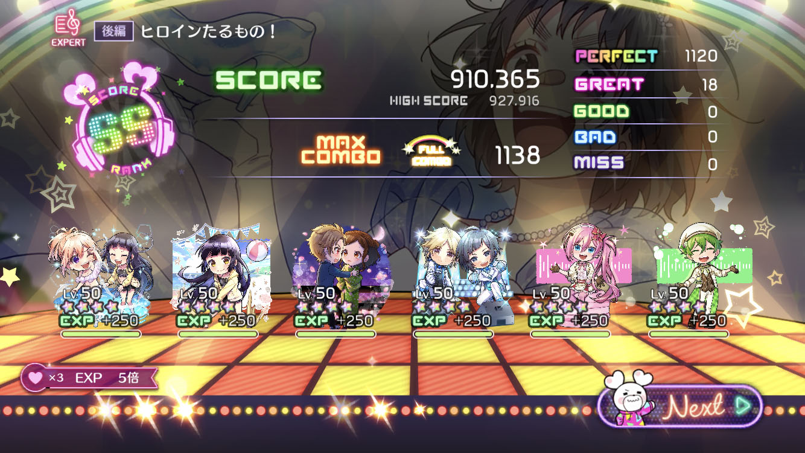

!DOCTYPE html>
自己紹介
report

青木涼の紹介！
経歴 profile
2002年 京都府宇治市生まれ
2021年 京都芸術大学入学
趣味：ゲームや音楽鑑賞。特にゲームにはこだわりがあり、流行っているゲームや何十個もゲームアプリを入れない。
一個をとことんやり込むタイプなので現在5つ。一年単位で一個ずつ増えている計算。
周回をするゲームが好きで得意分野。
主にやっているゲーム：パズドラ,Rokect League,ウマ娘,HoneyWorks Premium Live 上の写真のやつです。
- レポートを追加しました